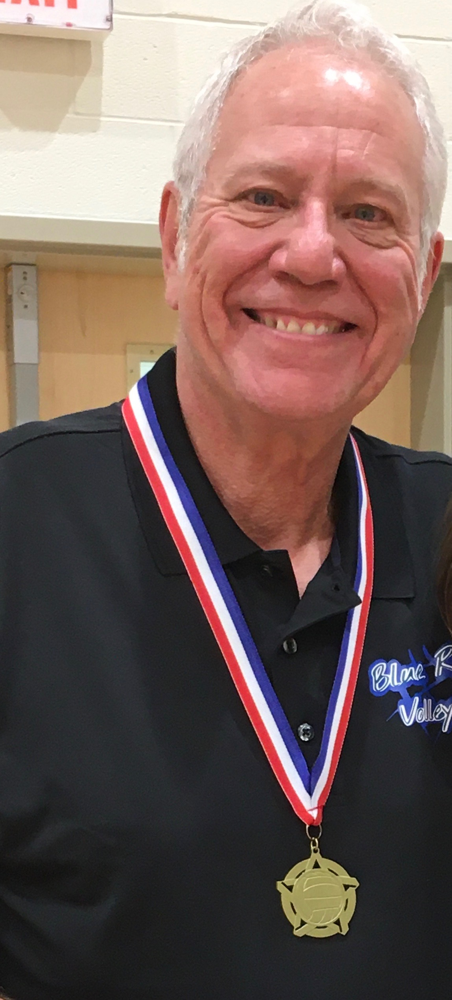

Blue Ridge Volleyball Club Coach
Cade Verner
Coach Cade began playing volleyball at Ball State University and continued to play post-education with local teams for 25+ years. His coaching career began with his 3 daughters, starting in a CYO youth league. As they grew, he continued to coach them through middle and high school for 15 years. Shortly after, Cade began to coach club volleyball at all levels and ages. He began at Circle City VBC in Indianapolis, Indiana and stayed there for 18 years while taking 6 teams to a nationals tournament. After moving to Asheville, NC, Cade continued his coaching career with Biltmore VBC. He continued his success and took 3 more teams to a nationals tournament and 2 teams to the AAU Championships. In 2019, Cade coached the 15u team at Blue Ridge with great success. In 2020, he was offered to be the assistant coach for the Walhalla High School Varsity team. His coaching philosophy centers around a passion for volleyball and a belief that if the ladies have fun, while dramatically improving their skills, they will have found a sport in which they can play with their daughters and granddaughters in the future.
Back to all coaches